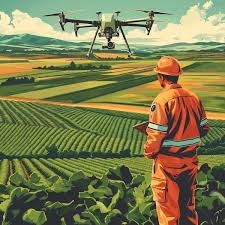
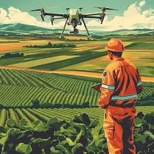

Por meio da pulverização aérea, os drones trazem mais eficiência, precisão e economia de tempo na aplicação de insumos para fertilizar o solo e controlar pragas e doenças nas lavouras. Além disso, eles têm um custo menor do que aeronaves maiores.
 
